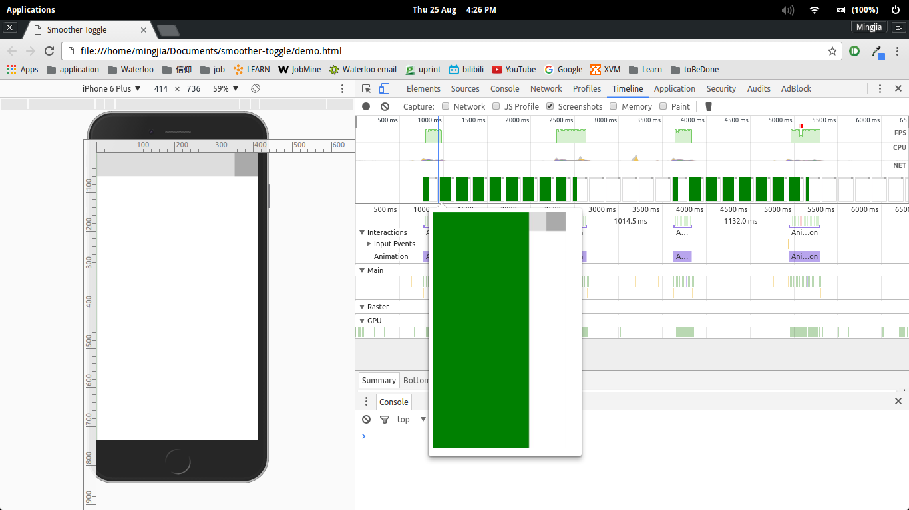
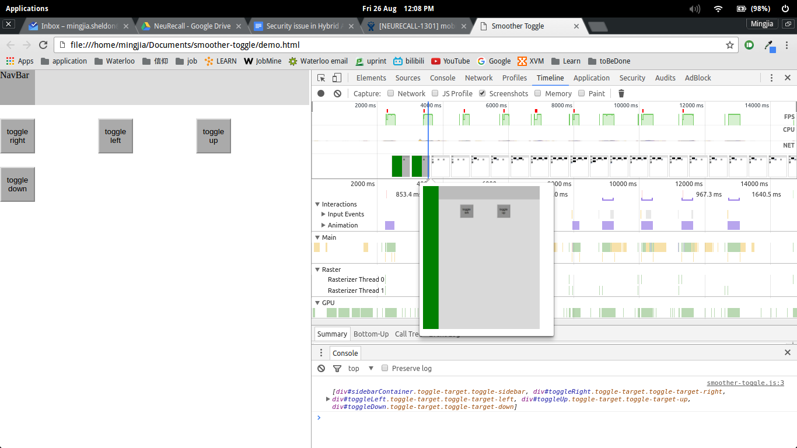
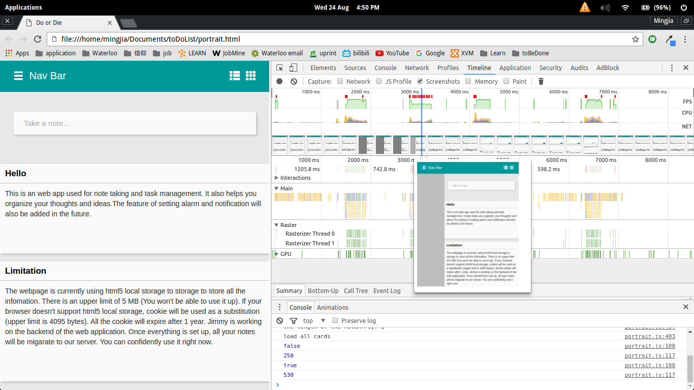

To use this, include the css and js files. add .toggle-trigger class to the div which you would like to trigger the toggle animation when it is clicked. Also add a data attribute, data-toggle-target. The value should be the id of the container of the toggle element.
Add a .toggle-target class to the container. If you want to set teh direction, add .toggle-target-left ,.toggle-target-right, .toggle-target-up or .toggle-target-down (the default direction is left). Then put the toggle element in the container.If you are using this as a side bar, add .toggle-sidebar to the toggle target. This will also add shadows to the background.
You can also look at the examples in this demo, or customize the css/js file.
This is the screenshot of the FPS


This is the screenshot of another web app using jQuery .toggle()

The FPS is much higher using CSS3 and the animation is morefluent. If the number of the element increases or the performance decreases, the difference will be more obvious.